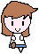
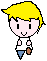
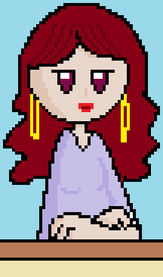
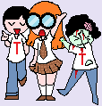
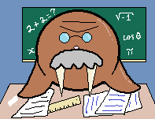
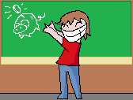

O jogo possui uma vasta gama de personagens, cada um com seus diferentes tipos de função, iremos então classifica-los de acordo com os possíveis tipo de personagens existentes.
Avatares
|  |
Avatar é o termo utilizado para representar o seu personagem, aquele que você controla e realiza todas as atividades dentro do jogo. Para essa categoria existem apenas dois personagens, o Trolinho e a Trolina, que possuem o mesmo papel na historia durante todo o seu desenrolar, a sua única diferença é o gênero. |
 |
O avatar do personagem pode ser alterado quanto a aparência, utilizando-se do nosso sistema de Skins(explicado no tópico ‘Itens’).
NPCs Auxiliares
Os NPCs(Personagem Não Jogável, em inglês Non-Playable Character) Auxiliares são todos aqueles que possuem locais próprios e bem visíveis dentro da estrutura da Instituição T. Existem apenas 3 deles, que são responsáveis pela secretaria, pela loja e pela videoteca.
|  |
NPC da Secretaria Na Secretaria é possível acessar ao tutorial, encontrar informações referentes ao seu atual objetivo dentro da escola e acompanhar o seu desempenho no ano letivo(o progresso no jogo). |
 |
NPC da Loja A loja é o local no qual você vai poder encontrar e adquirir todo e qualquer tipo de item, para adquiri-los você deve compra-los com algumas das moedas do jogo(explicado no tópico ‘Moedas do Jogo’). |
 |
NPC da Videoteca A Videoteca é um ambiente no qual o dono dela irá revelar, armazenar e exibir todos os vídeos e animações que você já tenha presenciado e adquirido comprando ou ganhando em uma missão. |
NPCs Aleatórios
|
NPCs aleatórios são aqueles que surgem misteriosamente e não se sabe ao certo quando, eles podem aparecer e para-lo ou estar parados em um corredor. Esses NPCs iram lhe oferecer missões, itens ou informações, essas ofertas podem conter algo que lhe ajude a completar seus objetivos ou que o desloque para alguma espécie de historia secundaria dentro colégio, mas é possível negar a oferta deles, ajuda-los ficará a sua escolha. |
 |
Professores
|
Não podemos nos esquecer dos Professores, aqueles responsáveis por todos os desafios que você enfrentará, todos representados por animais. |
|   |
Diretor
| O seu ultimo inimigo |